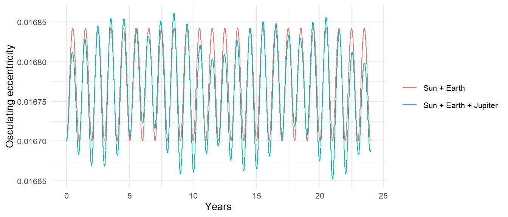

rot_x <- function(theta) {
co <- cos(theta); si <- sin(theta)
matrix(c(1, 0, 0, 0, co, si, 0, -si, co), nrow = 3)
}
rot_z <- function(theta) {
co <- cos(theta); si <- sin(theta)
matrix(c(co, si, 0, -si, co, 0, 0, 0, 1), nrow = 3)
}
keplerian_to_state <- function(a, e = 0, i = 0, lan = 0, arg_pe = 0,
nu = 0, mu) {
rad <- pi / 180
i <- i * rad; lan <- lan * rad; w <- arg_pe * rad; nu <- nu * rad
p <- a * (1 - e^2)
h <- sqrt(mu * p)
r <- p / (1 + e * cos(nu))
r_pf <- c(r * cos(nu), r * sin(nu), 0)
v_pf <- c(-mu / h * sin(nu), mu / h * (e + cos(nu)), 0)
Q <- rot_z(lan) %*% rot_x(i) %*% rot_z(w)
r_in <- as.vector(Q %*% r_pf)
v_in <- as.vector(Q %*% v_pf)
tibble(x = r_in[1], y = r_in[2], z = r_in[3],
vx = v_in[1], vy = v_in[2], vz = v_in[3])
}7 From Orbital Elements to State Vectors
add_body() wants six numbers: three for position, three for velocity. Astronomers describe orbits with six different numbers, the classical orbital elements, and add_body_keplerian() and add_planet() translate between the two. Chapter 4 ended with a reason to care: the four-line Moon was on the wrong orbit because a distance and a speed, chosen separately, do not describe the real ellipse. The elements do. This chapter derives the translation, implements it in plain R, checks it against the package, derives the reverse translation, and then uses it to do two things the package does not do on its own: put a planet where it was on a given date, and watch an orbit’s elements drift under the pull of a third body.
7.1 Six numbers
A two-body orbit is an ellipse in a plane. Two numbers fix the ellipse’s size and shape, three fix the plane’s orientation in space and the ellipse’s orientation within it, and one says where along the ellipse the body is right now.
- Semi-major axis, \(a\). The size. Half the longest diameter, in meters. Sets the period through \(T = 2\pi\sqrt{a^3/\mu}\).
- Eccentricity, \(e\). The shape. \(0\) is a circle, values approaching \(1\) are increasingly stretched.
- Inclination, \(i\). The tilt of the orbital plane relative to the reference plane (for the solar system, the ecliptic, the plane of Earth’s orbit). \(0°\) is flat; \(90°\) is a polar orbit.
- Longitude of the ascending node, \(\Omega\) (
lanin the package). Where the tilt points. The orbit crosses the reference plane twice; the ascending node is the crossing where the body moves from below to above, and \(\Omega\) is the angle from the reference \(x\) axis to that point, measured in the reference plane. - Argument of periapsis, \(\omega\) (
arg_pe). The angle, measured within the orbital plane, from the ascending node to periapsis. It rotates the ellipse within its own plane. - True anomaly, \(\nu\) (
nu). The angle from periapsis to the body’s current position, measured in the orbital plane in the direction of motion. Chapter 4’s orbit equation is written in terms of it.
All angles are in degrees in the package’s arguments and in radians in this chapter’s formulas. The documentation’s Keplerian Elements article shows each element varied in turn, with pictures; what follows is the algebra underneath those pictures.
7.2 Position and velocity in the orbital plane
Set up coordinates in the orbital plane with the \(x\) axis pointing toward periapsis and the \(y\) axis \(90°\) ahead in the direction of motion. This is the perifocal frame. In it the position is simply polar coordinates with the orbit equation Equation 4.8 for the radius:
\[ r = \frac{a(1-e^2)}{1 + e\cos\nu}, \qquad \mathbf{r}_{\mathrm{pf}} = \big(r\cos\nu,\ r\sin\nu,\ 0\big). \tag{7.1}\]
The velocity takes a short derivation. Differentiate the position:
\[ \dot x_{\mathrm{pf}} = \dot r\cos\nu - r\dot\nu\sin\nu, \qquad \dot y_{\mathrm{pf}} = \dot r\sin\nu + r\dot\nu\cos\nu. \]
We need \(\dot r\) and \(\dot\nu\). The angular momentum in polar coordinates is \(h = r^2\dot\nu\), so \(\dot\nu = h/r^2\) and \(r\dot\nu = h/r\). Using the orbit equation with \(p = a(1-e^2) = h^2/\mu\),
\[ r\dot\nu = \frac{h}{r} = \frac{h(1+e\cos\nu)}{p} = \frac{\mu}{h}(1 + e\cos\nu). \]
For \(\dot r\), differentiate \(r = p/(1+e\cos\nu)\) with respect to time:
\[ \dot r = \frac{p\,e\sin\nu\,\dot\nu}{(1+e\cos\nu)^2} = \frac{r^2 e\sin\nu}{p}\,\dot\nu = \frac{r^2 e\sin\nu}{p}\cdot\frac{h}{r^2} = \frac{h e}{p}\sin\nu = \frac{\mu}{h}\,e\sin\nu. \]
Substituting both into the velocity components and simplifying (the \(e\sin\nu\cos\nu\) terms cancel in \(\dot x\), and \(\sin^2\nu + \cos^2\nu = 1\) collapses \(\dot y\)):
\[ \dot x_{\mathrm{pf}} = -\frac{\mu}{h}\sin\nu, \qquad \dot y_{\mathrm{pf}} = \frac{\mu}{h}\,(e + \cos\nu), \qquad h = \sqrt{\mu\,a(1-e^2)}. \tag{7.2}\]
These are the formulas in the package documentation. They have a nice interpretation: in the perifocal frame the velocity vector traces a circle of radius \(\mu/h\) centered at \((0, \mu e/h)\) as the body goes around. That is Hamilton’s hodograph theorem, and it is another way of saying the eccentricity vector is conserved.
At periapsis, \(\nu = 0\) and the speed is \((\mu/h)(1+e)\); at apoapsis, \(\nu = \pi\) and it is \((\mu/h)(1-e)\). Their ratio is \((1+e)/(1-e)\), which for Halley’s Comet (\(e = 0.967\)) is about 60. Chapter 5’s warning about periapsis is this ratio.
7.3 Three rotations
The perifocal frame is tied to the orbit. The simulation frame is tied to the reference plane. Getting from one to the other takes three rotations, applied to both the position and the velocity vectors, and the only hard part is keeping the order and the signs straight.
Start with the orbit lying in the reference plane with periapsis along \(+x\); that is the perifocal frame itself. Then:
- Rotate about the \(z\) axis by \(\omega\). Periapsis moves away from the \(x\) axis; the \(x\) axis is now where the ascending node will be.
- Rotate about the (new) \(x\) axis by \(i\). The orbital plane tilts out of the reference plane, hinged on the node line.
- Rotate about the (original) \(z\) axis by \(\Omega\). The node line swings around to its proper direction.
With the standard rotation matrices
\[ R_z(\theta) = \begin{pmatrix} \cos\theta & -\sin\theta & 0 \\ \sin\theta & \cos\theta & 0 \\ 0 & 0 & 1 \end{pmatrix}, \qquad R_x(\theta) = \begin{pmatrix} 1 & 0 & 0 \\ 0 & \cos\theta & -\sin\theta \\ 0 & \sin\theta & \cos\theta \end{pmatrix}, \]
the combined transformation is
\[ \mathbf{r} = R_z(\Omega)\,R_x(i)\,R_z(\omega)\,\mathbf{r}_{\mathrm{pf}}, \qquad \mathbf{v} = R_z(\Omega)\,R_x(i)\,R_z(\omega)\,\mathbf{v}_{\mathrm{pf}}. \tag{7.3}\]
Matrices act right to left, so \(R_z(\omega)\) is applied first, which matches the list above. The package documentation writes the same product as \(R_z(-\Omega)R_x(-i)R_z(-\omega)\); the sign difference is a convention about whether a rotation matrix rotates the vector or the coordinate axes, and the two descriptions produce the same state vector. The code below is the test of that claim.
Finally, the elements describe the orbit relative to the parent, so the parent’s own position and velocity are added at the end. That is why parent must already be in the system, and it is what lets add_planet("Moon", parent = "Earth") work when Earth is itself moving around the Sun.
7.4 Implementing it
(matrix() fills column by column, which is why the entries in rot_x() and rot_z() are listed one column at a time.) Now a test against the package, using Mars with all six elements non-trivial:
mars <- list(a = distance_mars_sun, e = 0.0934, i = 1.85,
lan = 49.6, arg_pe = 286.5, nu = 120)
from_package <- create_system() |>
add_sun() |>
add_body_keplerian("Mars", mass = mass_mars, parent = "Sun",
a = mars$a, e = mars$e, i = mars$i,
lan = mars$lan, arg_pe = mars$arg_pe, nu = mars$nu) |>
get_bodies() |>
filter(id == "Mars") |>
select(x, y, z, vx, vy, vz)
by_hand <- keplerian_to_state(a = mars$a, e = mars$e, i = mars$i,
lan = mars$lan, arg_pe = mars$arg_pe,
nu = mars$nu,
mu = gravitational_constant * mass_sun)
bind_rows(package = from_package, by_hand = by_hand, .id = "source")
#> # A tibble: 2 × 7
#> source x y z vx vy vz
#> <chr> <dbl> <dbl> <dbl> <dbl> <dbl> <dbl>
#> 1 package -25114100376. 235578953124. 5549391368. -23180. -512. 559.
#> 2 by_hand -25114100376. 235578953124. 5549391368. -23180. -512. 559.max(abs(as.numeric(from_package) - as.numeric(by_hand)) /
abs(as.numeric(by_hand)))
#> [1] 3.553888e-15The two agree to floating-point precision, which settles the sign convention. One detail worth noticing: the gravitational parameter I passed is \(\mu = GM_{\odot}\), the parent’s mass alone, which is what add_body_keplerian() uses. For Mars the difference from \(G(M_\odot + m_{\mathrm{Mars}})\) is three parts in ten million. For the Moon it is not negligible, and we will come back to it.
7.5 The inverse problem
Going the other way, from a state vector to elements, is the step that tells you what orbit a simulated body is actually on, and every piece of it was derived in Chapter 4. Given relative position \(\mathbf{r}\) and velocity \(\mathbf{v}\):
- \(\mathbf{h} = \mathbf{r}\times\mathbf{v}\) is normal to the orbital plane, so \(\cos i = h_z/h\).
- The node vector \(\mathbf{n} = \hat{\mathbf{z}}\times\mathbf{h}\) lies along the line of nodes, pointing to the ascending node, so \(\Omega = \operatorname{atan2}(n_y, n_x)\).
- The eccentricity vector \(\mathbf{e} = (\mathbf{v}\times\mathbf{h})/\mu - \mathbf{r}/r\) points to periapsis, so \(\omega\) is the angle from \(\mathbf{n}\) to \(\mathbf{e}\), and \(\nu\) is the angle from \(\mathbf{e}\) to \(\mathbf{r}\), both measured in the orbital plane.
- Vis-viva, solved for \(a\): \(a = 1/(2/r - v^2/\mu)\).
The angles in the orbital plane need a sign, which comes from whether the cross product of the two vectors points along \(\mathbf{h}\) or against it. Two degenerate cases need a convention: a flat orbit has no ascending node (take \(\mathbf{n} = \hat{\mathbf{x}}\), so \(\omega\) becomes the angle from the \(x\) axis to periapsis), and a circular orbit has no periapsis (take \(\mathbf{e}\) along \(\mathbf{n}\), so \(\nu\) is measured from the node).
state_to_elements <- function(x, y, z, vx, vy, vz, mu) {
cross <- function(a, b) c(a[2] * b[3] - a[3] * b[2],
a[3] * b[1] - a[1] * b[3],
a[1] * b[2] - a[2] * b[1])
norm <- function(a) sqrt(sum(a^2))
deg <- function(theta) (theta * 180 / pi) %% 360
r <- c(x, y, z); v <- c(vx, vy, vz)
h <- cross(r, v)
n <- cross(c(0, 0, 1), h)
e_vec <- cross(v, h) / mu - r / norm(r)
e <- norm(e_vec)
a <- 1 / (2 / norm(r) - sum(v^2) / mu)
i <- acos(h[3] / norm(h))
if (norm(n) < 1e-12 * norm(h)) n <- c(1, 0, 0) # flat orbit
e_dir <- if (e > 1e-12) e_vec / e else n / norm(n) # circular orbit
h_hat <- h / norm(h)
lan <- atan2(n[2], n[1])
arg_pe <- atan2(sum(cross(n, e_dir) * h_hat), sum(n * e_dir))
nu <- atan2(sum(cross(e_dir, r) * h_hat), sum(e_dir * r))
tibble(a = a, e = e, i = deg(i), lan = deg(lan),
arg_pe = deg(arg_pe), nu = deg(nu))
}Round trip:
state_to_elements(by_hand$x, by_hand$y, by_hand$z,
by_hand$vx, by_hand$vy, by_hand$vz,
mu = gravitational_constant * mass_sun)
#> # A tibble: 1 × 6
#> a e i lan arg_pe nu
#> <dbl> <dbl> <dbl> <dbl> <dbl> <dbl>
#> 1 227900000000 0.0934 1.85 49.6 286. 120.Mars’s elements come back. Now the question Chapter 4 left open: what orbit was the four-line Moon on?
state_to_elements(distance_earth_moon, 0, 0, 0, speed_moon, 0,
mu = gravitational_constant * (mass_earth + mass_moon))
#> # A tibble: 1 × 6
#> a e i lan arg_pe nu
#> <dbl> <dbl> <dbl> <dbl> <dbl> <dbl>
#> 1 382513625. 0.00493 0 0 180 180A nearly circular orbit, starting at apoapsis (\(\nu = 180°\)), with a semi-major axis a little under 384,400 km, exactly as Chapter 4 computed by hand.
This inverse conversion is what get_orbital_elements() does, for a whole simulation at once: it takes the position and velocity of a body relative to a parent at every time step and returns the six elements, plus the period. Its default \(\mu\) is \(GM_{\mathrm{parent}}\), matching add_body_keplerian(), so the round trip is exact:
mars_check <- create_system() |>
add_sun() |>
add_body_keplerian("Mars", mass = mass_mars, parent = "Sun",
a = mars$a, e = mars$e, i = mars$i,
lan = mars$lan, arg_pe = mars$arg_pe, nu = mars$nu) |>
simulate_system(time_step = seconds_per_day, duration = seconds_per_day)
get_orbital_elements(mars_check, "Mars", "Sun")[1, ]
#> # A tibble: 1 × 8
#> time a e i lan arg_pe nu period
#> <dbl> <dbl> <dbl> <dbl> <dbl> <dbl> <dbl> <dbl>
#> 1 0 227900000000. 0.0934 1.85 49.6 286. 120. 59330240.The function is state_to_elements() with the bookkeeping done: the relative state, the join on time, the degenerate cases, and a mu argument when you want the two-body value. From here on the book uses it.
7.6 The Moon on its real orbit
The real Moon’s orbit has \(a = 384{,}400\) km, \(e = 0.0549\), and \(i = 5.15°\) to the ecliptic, and add_planet("Moon", parent = "Earth") builds it from those elements. Earth and the Moon are the one pair in the solar system where the secondary’s mass is not negligible, and the conversion uses \(\mu = GM_{\mathrm{parent}}\), so it is worth checking what orbit the package actually produces. The simulation always uses both masses, so the orbit the Moon follows is a two-body orbit with \(\mu = G(M_\oplus + m_{\mathrm{Moon}})\), and get_orbital_elements() with that \(\mu\) tells us its true semi-major axis:
em <- create_system() |>
add_body("Earth", mass = mass_earth) |>
add_planet("Moon", parent = "Earth")
em_sim <- simulate_system(em, time_step = seconds_per_hour,
duration = seconds_per_day * 30)
mu_em <- gravitational_constant * (mass_earth + mass_moon)
actual <- get_orbital_elements(em_sim, "Moon", "Earth", mu = mu_em)[1, ]
actual
#> # A tibble: 1 × 8
#> time a e i lan arg_pe nu period
#> <dbl> <dbl> <dbl> <dbl> <dbl> <dbl> <dbl> <dbl>
#> 1 0 379258886. 0.0421 5.15 125. 318. 1.01e-13 2310295.c(a_ratio = actual$a / 3.844e8,
T_predicted_days = 2 * pi * sqrt(actual$a^3 / mu_em) / seconds_per_day)
#> a_ratio T_predicted_days
#> 0.9866256 26.7395241The ratio is not 1. The velocity the conversion assigned is right for \(\mu = GM_\oplus\) but slightly too small for the \(\mu\) the simulation actually runs with, so the Moon settles onto a slightly smaller, faster orbit, with a period a couple of percent short of the real 27.32 days. The simulation confirms it:
measure_period(em_sim, "Moon", "Earth") / seconds_per_day
#> [1] 26.74042If you need the Moon’s period right to better than a percent, build it with keplerian_to_state() using the combined \(\mu\) and pass the result to add_body(); measure_period() then returns the real 27.32 days. For every other body in the solar system the question does not arise: the heaviest planet is a thousandth of the Sun, and the error is a twentieth of a percent in its period.
7.7 Where is Mars today? Kepler’s equation
The elements fix the orbit, and \(\nu\) fixes the position on it, but \(\nu\) is not what an ephemeris gives you. An ephemeris gives you the time of perihelion passage or, equivalently, the mean anomaly \(M\) at some epoch, and converting a time into a true anomaly is a problem Kepler himself posed and could not solve in closed form. Nobody can; it has to be done numerically. The package starts every body at \(\nu = 0\) by default and lets you set nu yourself, so if you want the planets where they were on a particular date, this is the calculation you have to do.
Define the mean anomaly as the angle a body would have moved through if it went around uniformly:
\[ M = \frac{2\pi}{T}\,(t - t_p) = \sqrt{\frac{\mu}{a^3}}\,(t - t_p), \]
where \(t_p\) is the time of periapsis. The link between \(M\) and \(\nu\) goes through a third angle, the eccentric anomaly \(E\), defined geometrically: draw the circle of radius \(a\) that circumscribes the ellipse, project the body’s position straight up (perpendicular to the major axis) onto that circle, and \(E\) is the angle of that projected point from the center of the ellipse. Standard ellipse geometry then gives
\[ r = a(1 - e\cos E), \qquad \tan\frac{\nu}{2} = \sqrt{\frac{1+e}{1-e}}\,\tan\frac{E}{2}. \tag{7.4}\]
The area swept from periapsis, computed in the auxiliary circle and scaled by \(b/a\), comes out to \(\tfrac12 ab\,(E - e\sin E)\). Kepler’s second law says the area swept is also \(\pi ab \cdot (t-t_p)/T = \tfrac12 ab\,M\). Equating them:
\[ M = E - e\sin E. \tag{7.5}\]
This is Kepler’s equation. Given \(M\), it has to be solved for \(E\), and since \(E\) appears both bare and inside a sine there is no algebraic solution. Newton’s method does it in a handful of iterations for any \(e < 1\):
solve_kepler <- function(M, e, tol = 1e-12) {
E <- if (e < 0.8) M else pi # a safe starting guess
repeat {
dE <- (E - e * sin(E) - M) / (1 - e * cos(E))
E <- E - dE
if (abs(dE) < tol) break
}
E
}
true_anomaly_at <- function(t_since_periapsis, a, e, mu) {
M <- sqrt(mu / a^3) * t_since_periapsis
E <- solve_kepler(M %% (2 * pi), e)
nu <- 2 * atan2(sqrt(1 + e) * sin(E / 2), sqrt(1 - e) * cos(E / 2))
(nu * 180 / pi) %% 360
}Check it against the simulation. Mars starts at perihelion, so \(t_p = 0\); where should it be 100 days later, and where is it?
mars_sim <- create_system() |>
add_sun() |>
add_planet("Mars", parent = "Sun") |>
simulate_system(time_step = seconds_per_day, duration = seconds_per_day * 100)
mu_sun <- gravitational_constant * mass_sun
predicted <- true_anomaly_at(100 * seconds_per_day,
a = distance_mars_sun, e = 0.0934, mu = mu_sun)
simulated <- get_orbital_elements(mars_sim, "Mars", "Sun") |>
filter(time == max(time)) |>
pull(nu)
c(predicted_nu = predicted, simulated_nu = simulated,
mean_anomaly = (sqrt(mu_sun / distance_mars_sun^3) * 100 *
seconds_per_day) * 180 / pi)
#> predicted_nu simulated_nu mean_anomaly
#> 61.51723 61.53228 52.42521The true anomaly runs ahead of the mean anomaly by several degrees, because Mars moves fastest near perihelion, and the simulation agrees with Kepler’s equation to the precision of the daily step. To place a planet on a given date, then, you need its elements and its time of perihelion passage from an ephemeris, compute \(\nu\) with true_anomaly_at(), and pass it as nu. Appendix D notes that the package’s elements are at the J2000 epoch; for the outer planets, whose elements change slowly, that is good for decades, and for everything the perihelion time is the one extra number you need.
7.8 Osculating elements
In a two-body system the elements are constants. In any other system they are not, and the elements get_orbital_elements() reports at some instant describe the ellipse the body would follow if every other perturbation switched off at that instant. These are called osculating elements (from the Latin for “kissing”: the ellipse that touches the true path at that point), and watching them change is how astronomers describe perturbations.
Here is Earth with and without Jupiter, over 24 years:
earth_alone <- create_system() |>
add_sun() |>
add_planet("Earth", parent = "Sun") |>
simulate_system(time_step = seconds_per_day, duration = seconds_per_year * 24)
earth_jupiter <- create_system() |>
add_sun() |>
add_planet("Earth", parent = "Sun") |>
add_planet("Jupiter", parent = "Sun", nu = 90) |>
simulate_system(time_step = seconds_per_day, duration = seconds_per_year * 24)bind_rows(
get_orbital_elements(earth_alone, "Earth", "Sun") |> mutate(system = "Sun + Earth"),
get_orbital_elements(earth_jupiter, "Earth", "Sun") |> mutate(system = "Sun + Earth + Jupiter")
) |>
ggplot(aes(time / seconds_per_year, e, color = system)) +
geom_line() +
labs(x = "Years", y = "Osculating eccentricity", color = NULL)
The changes are small, of order \(10^{-4}\), and they are real: Jupiter’s pull on Earth is a few parts in \(10^{5}\) of the Sun’s, and over the long term it drives a slow oscillation of Earth’s eccentricity with a period of about 100,000 years that is one of the Milankovitch cycles behind the ice ages. A 24-year run shows only the fast part. The two-body description does not fail here; it just stops being exact, and the elements become a description of the motion rather than a prediction of it. The package’s add_planet() elements are the osculating elements at J2000, and the simulation takes it from there.